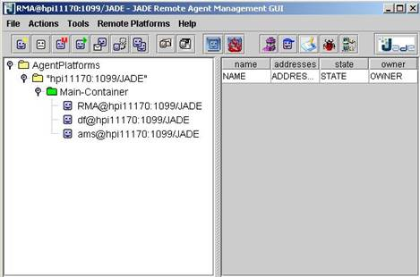
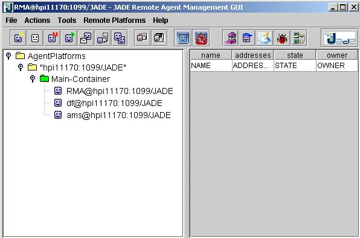

JADE TUTORIAL
JADE Logging service
USAGE
RESTRICTED ACCORDING TO LICENSE AGREEMENT.
last update:
Authors: Rosalba Bochicchio (TILAB, formerly CSELT)
Copyright (C) 2000 CSELT S.p.A.
Copyright (C) 2001-2004 TILab
S.p.A.
JADE - Java Agent DEvelopment
Framework is a framework to develop multi-agent systems in compliance with the
FIPA specifications. JADE successfully passed the 1st FIPA
interoperability test in
Copyright (C) 2000 CSELT
S.p.A. (C) 2001 TILab
S.p.A. (C) 2002 TILab S.p.A.
This library is free software; you can
redistribute it and/or modify it under the terms of the GNU Lesser General
Public License as published by the Free Software Foundation, version 2.1 of the
License.
This library is distributed in the hope that
it will be useful, but WITHOUT ANY WARRANTY; without even the implied warranty
of MERCHANTABILITY or FITNESS FOR A PARTICULAR PURPOSE. See the GNU Lesser General Public License for
more details.
You should have received a copy of the GNU
Lesser General Public License along with this library; if not, write to the Free
Software Foundation, Inc., 59 Temple Place - Suite 330, Boston, MA 02111-1307, USA.
TABLE
OF CONTENTS
5 Dynamic
Configurations Updates
5.1 Logging Configuration File
JADE Logging service
Since JADE 3.2, the logging facilities of JADE are based
upon the package java.util.logging. This tutorial
shows how to use JADE logging service.
The goal of this document is to provide an overview of the key elements of the JADE logging service. The logging service class provides a uniform way to produce logging printouts by hiding to applications the characteristics of the device (e.g. on J2ME a RecordStore is used). The J2SE implementation is a pure extension of the java.util.logging.Logger class and it provides the whole set of functionalities of java.util.logging. The implementation for MIDP and PJAVA environments, instead, provide the same API but a reduced set of functionalities: please refer the documentation provided for class jade.util.Logger for further information about this topic. The class jade.util.Logger is, infact, the main class on which applications make logging calls.
JADE classes and user’s applications use logging service
by making logging calls on jade.util.Logger objects. Because its implementation is based upon the java.util.logging package, loggers are organized into a
hierarchical name space and child can inherit properties from parents.
When the user instantiates a logger object, he assigns it a unique name, which can be, for instance, the name of the class in which the object has been created. The usage of the following coding style is recommended in order to create a Logger object for class mypackage.MyClass
Logger logger = jade.util.Logger.getMyLogger(this.getName().getClass());
Notice that the static method getMyLogger
is used instead of the class constructor.
Logger objects provide an easy mean to produce
messages of interest to end users and/or software developers and to log them to
different kinds of destinations such as, for instance, the standard output or a
file. (cfr § LOG HANDLERS).
Each log message has an associated log Level. The Level gives a rough guide to
the importance and urgency of a log message (cfr §
LOG LEVELS). The usage of the following coding style is recommended in order
to log a message with a certain level of
importance:
if
(logger.isLoggable(jade.util.Logger.myLevel))
logger.log(jade.util.Logger.myLevel, “this is the message to log”)
where myLevel will be one of the levels allowed ( for instance jade.util.Logger.SEVERE). Notice that testing if the level is loggable before actually calling the log method allows relevant performance improvements.
Levels provided by jade logging services are the same as java logging ones. Please refer to java.util.logging documentation for further informations about it.
Handlers provided by jade logging services are the same as java logging ones. Please refer to java logging documentation for further details about it.
User can change the log level for a logger object and the
handlers associated with it. JADE provides two ways to control the logging
configuration:
-
at deployment time: the JVM can be launched by passing
a logging configuration file that specifies logging level and handlers for each
class
- at execution time: the Log Manager Agent can be launched at anytime during the execution of JADE. This graphical tool allows to change the logging configuration (again level and handler) on a per-class basis.
Here
is an example of a logging configuration file (myLogging.properties) :
# Properties file
which configures the operation of the JDK
# logging facility.
# The system
will look for this config file, first using
# a System property specified at startup:
#
# >java -Djava.util.logging.config.file=C:\Jade\myLogging.properties
#
# If this property is not specified, then
the config file is
# retrieved from its default location at:
#
# JDK_HOME/jre/lib/logging.properties
# Global logging
properties.
# ------------------------------------------
# The set of
handlers to be loaded upon startup.
# Comma-separated list of class names.
handlers=java.util.logging.FileHandler, java.util.logging.ConsoleHandler
# Default global
logging level.
# Loggers and Handlers may override this
level
.level=INFO
# Loggers
# ------------------------------------------
# Loggers are usually attached to packages.
# Here, the level
for each package is specified.
# The global level
is used by default, so levels
# specified here simply act as an override.
jade.core.level=ALL
jade.domain.mobility.level=CONFIG
# Handlers
# -----------------------------------------
# --- ConsoleHandler
---
# Override of global logging level
java.util.logging.ConsoleHandler.level=SEVERE
java.util.logging.ConsoleHandler.formatter=java.util.logging.SimpleFormatter
# --- FileHandler
---
# Override of global logging level
java.util.logging.FileHandler.level=ALL
# Naming style
for the output file:
# (The output file is placed in the
directory
# defined by the "user.home"
System property.)
java.util.logging.FileHandler.pattern=%h/java%u.log
# Limiting size of output file in bytes:
java.util.logging.FileHandler.limit=50000
# Number of output files to cycle
through, by appending an
# integer to the base file name:
java.util.logging.FileHandler.count=1
# Style of output (Simple or XML):
java.util.logging.FileHandler.formatter=java.util.logging.SimpleFormatter
LogManager Agent can be launched via the JADE RMA gui using the icon shown below.

After LogManager Agent has been launched the gui shown in Figure 1 will appear.

Figure 1: LogManager Agent user interface
The column “LoggerName” shows a list of the logger objects currently instantiated in the platform. For each logger, you can change the log level at runtime by setting it using the combo box as shown in Figure 2. The column Handlers shows the handlers currently settled for the logger object on the same row. The column “Set Log File” allows you to create a file at runtime and send your logs to it. In the example shown in the picture above, the logs generated by class jade.content.shema.AgentActionSchema will be sent both to console and to file logFile.txt.